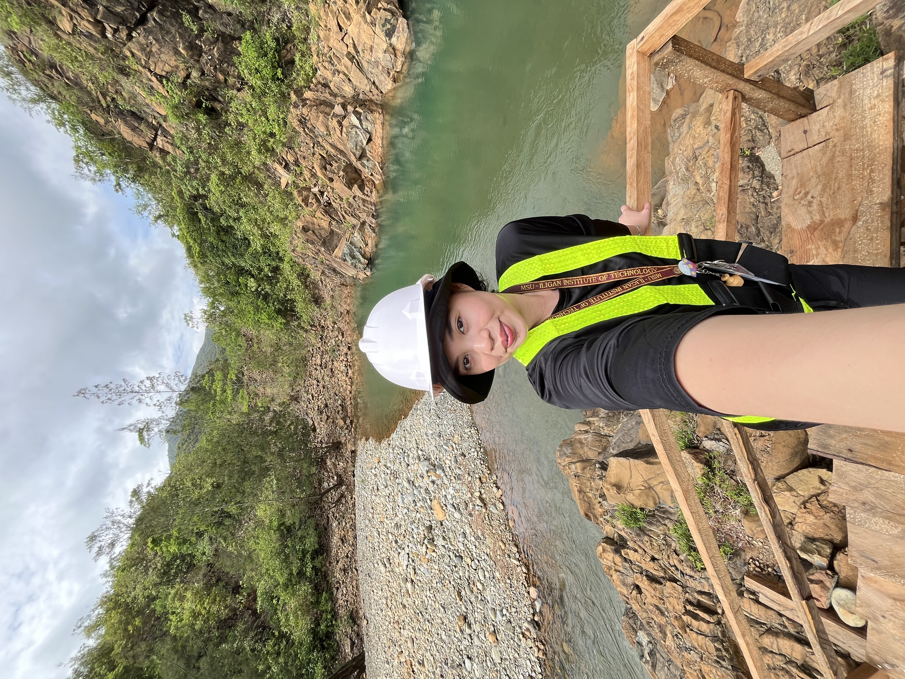

About Me

Hi, I'm Noralyn!
My full name is Noralyn Saidona Macapodi, and I'm from Ditucalan, Iligan City. I'm a 4th year BS Mining Engineering student at Mindanao State University - Iligan Institute of Technology (MSU-IIT).
I was born and raised in Ditucalan, in a big and lively family of 13: Mama, Papa, my 5 brothers, my 5 sisters, and me. Growing up with so many people under one roof taught me to share, to work as a team, and to be patient.
I chose Mining Engineering because I'm curious about the earth and I love being outdoors. I like that the course mixes science, problem-solving, and real work on site.
From
Ditucalan, Iligan City
Studying
BS Mining Engineering, MSU-IIT (4th year)
Family
13 of us: parents, 5 brothers, 5 sisters, and me
I love
Cooking and singing
My next step
Law school, after I become a Mining Engineer
“An unexamined life is not worth living.” Socrates